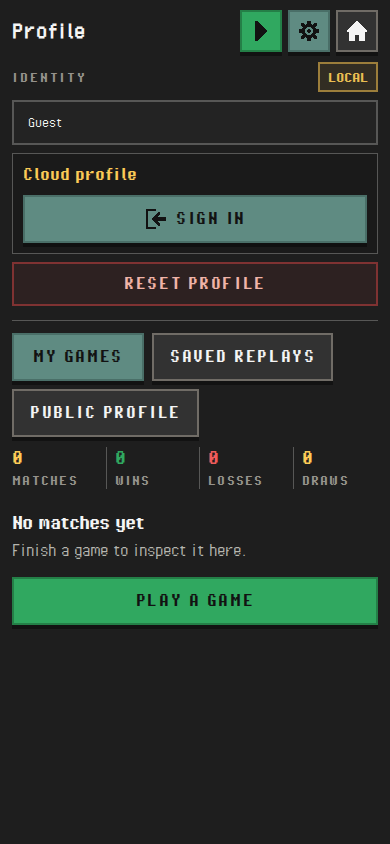
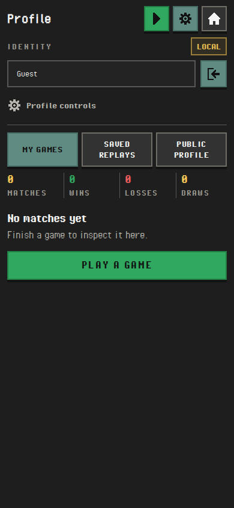
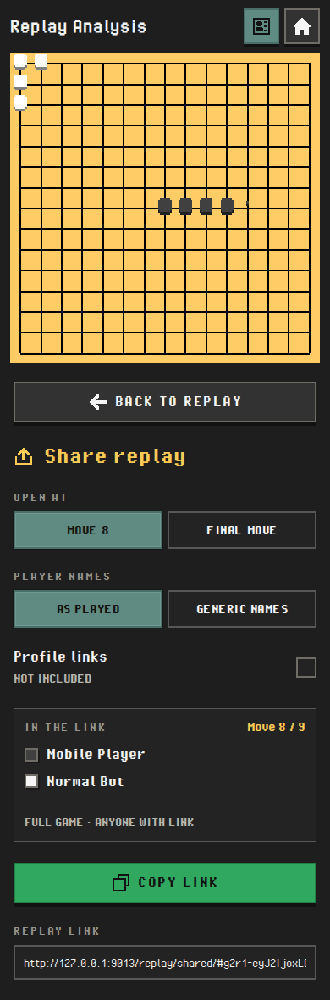
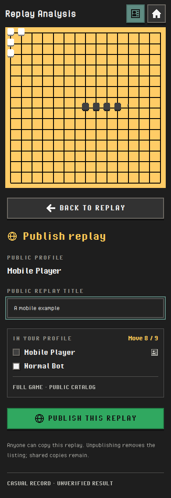
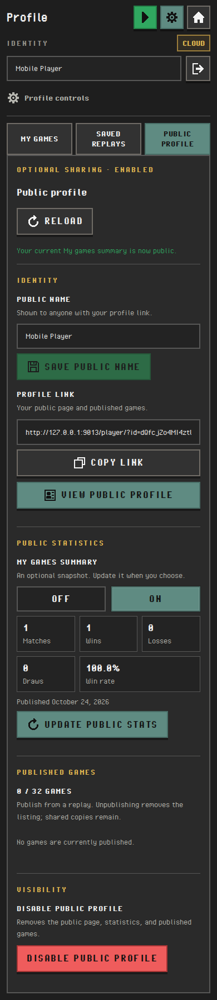

Before
390 × 844 · start of this pass

Gomoku2D · 0.6.2 working preview
A closer pass over the 0.6.1 sharing/profile flows and the new public player page. These are captures of the application, with the existing fonts, icons and controls.
Local implementation 754ed62. Production remains 0.6.1. Device emulation and browser tests are complete; your visual and physical-phone review is next.
Name and sign-in/out remain visible. Secondary controls expand when needed, and the three record tabs share one row.
390 × 844 · start of this pass

390 × 844 · current preview

Scroll inside the captures, or show them at full height. Buttons inside an image are part of the capture; use the interactive preview to operate the app.
These established flows were checked on narrow screens too. Share and Publish keep the sidebar swap, Back action, selected move and clipboard fallback. Public statistics remain independently opt-in.



Review the density of the three tabs and compact public-game rows; expand Profile controls; inspect a saved replay; try Share and Publish; rotate Replay to landscape. On a real phone, also check text entry, browser chrome, scrolling and the sign-in round trip.
Profile and landscape comparisons use matching guest/game content. Public player uses the preserved 18-game Demo Player record. Saved-replay captures show equivalent synthetic records from separate isolated sessions; timestamps differ, and its Before capture already includes the first compact Profile iteration. Other owner captures use synthetic accounts in a separate emulator.
No rules, storage schema, dependencies or infrastructure changed. Tests cover three browser engines, but do not certify a particular physical phone, virtual keyboard or assistive technology. The earlier real-account sharing handoff remains open.